Cafe Shareloc & Billiar
Interior
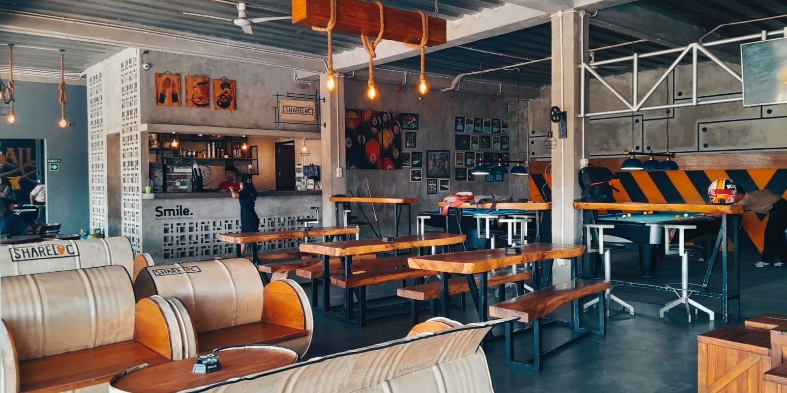
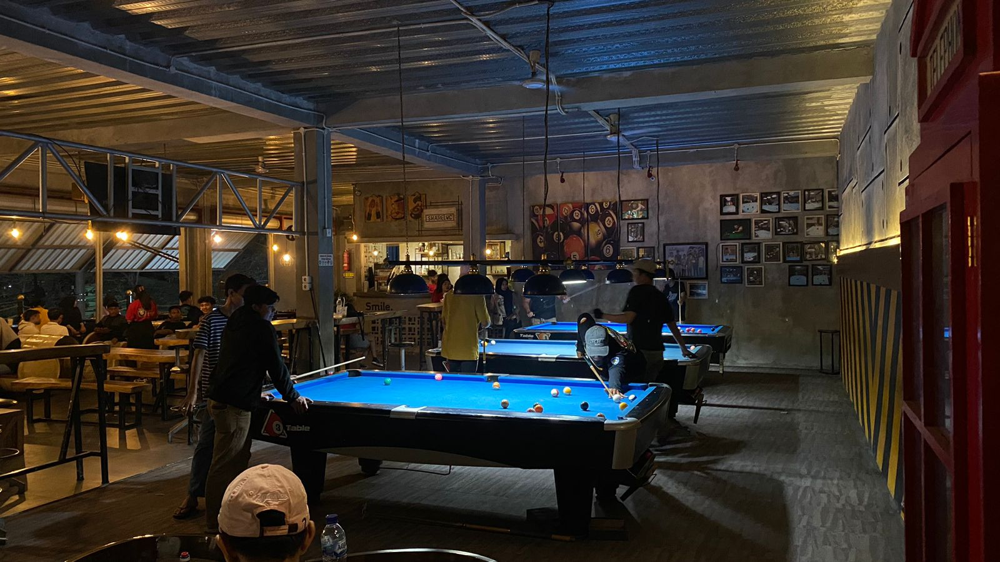

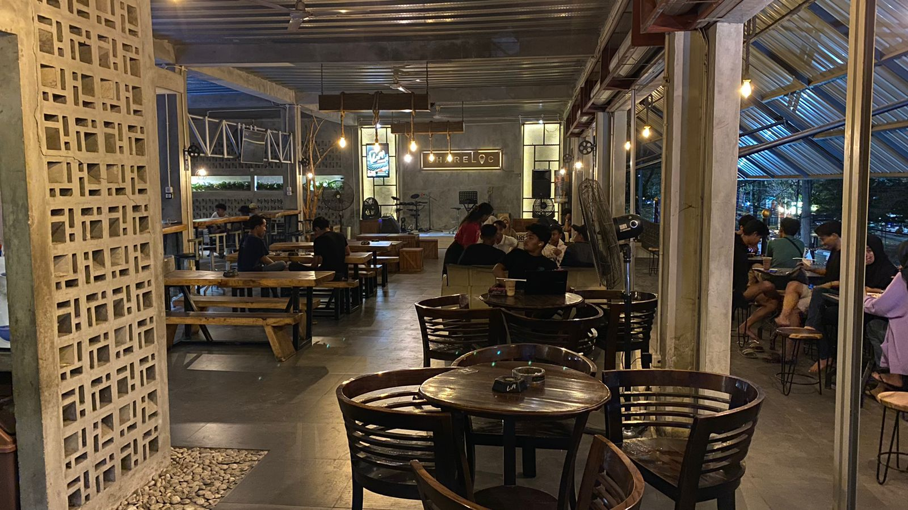
>
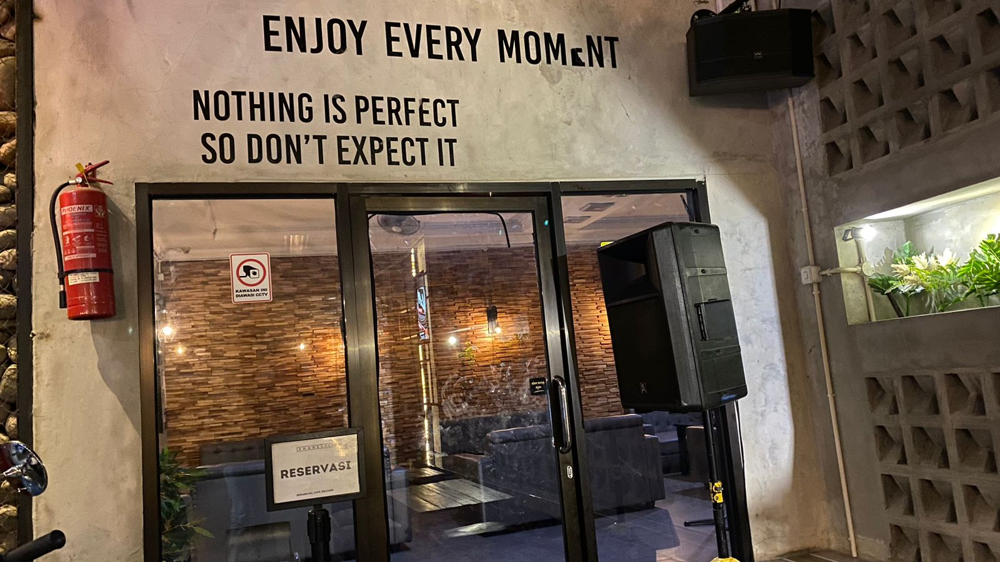
Interior cafe adalah desain dan tata letak yang digunakan dalam sebuah kafe untuk menciptakan suasana yang nyaman, menarik, dan menyenangkan bagi pengunjung. Desain interior kafe penting karena dapat mempengaruhi suasana hati dan
kenyamanan pengunjung, serta mencerminkan identitas dan konsep kafe tersebut. Cafe Shareloc & Billiard memiliki suasana yang nyaman dimana di cafe ini menyediakan pilihan tempat yaitu outdoor dan indoor dengan interior unik yang tidak kalah keren dengan cafe lainnya.
Cafe Live Music
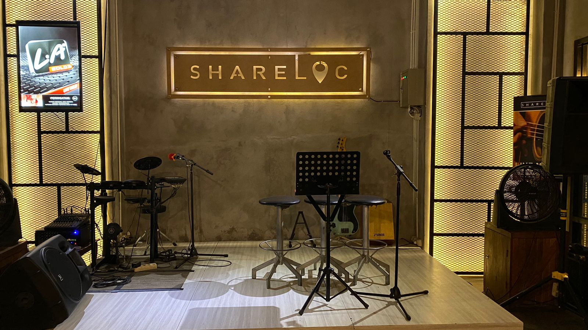
Live music pada cafe adalah salah satu cara untuk menarik pengunjung dan menciptakan suasana yang menyenangkan dan interaktif. Penampilan musik langsung dapat memberikan pengalaman yang berbeda dan menambah daya tarik kafe tersebut.
Daya tarik sebuah cafe tidak hanya dari interior dan menunya saja. Tak jarang pelanggan datang karena pertunjukan seni yang kerap diadakan disana seperti live music. Tempat live music yang asyik untuk nongkrong, jadi salah satu
hiburan cafe ini yaitu kita dapat menyaksikan live music yang sangat keren. Untuk mengetahui update-an terbaru mengenai event yang akan di adakan di Cafe Shareloc & Billiard, anda bisa langsung mengunjungi sosial media dari Cafe Shareloc & Billiard
yang tercantum pada menu "contact" pada tampilan Home.
Work From Cafe
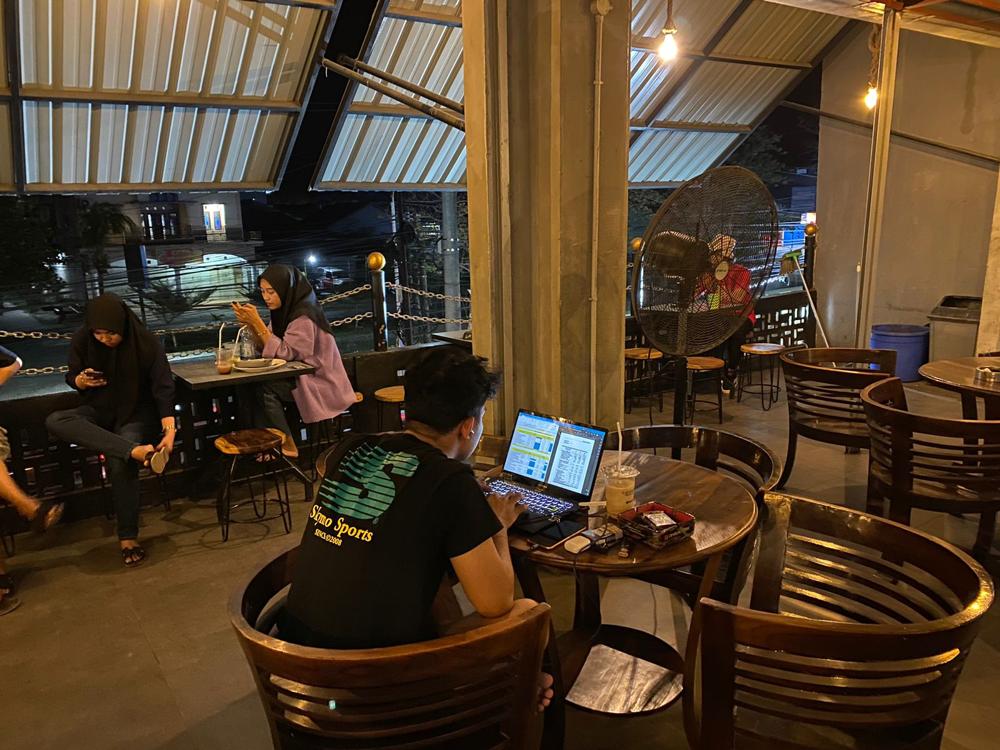
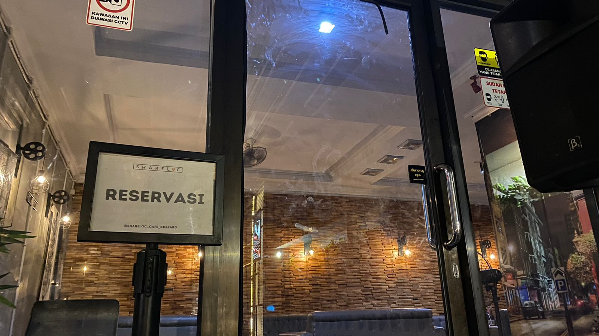
Siapa nih yang suka mengerjakan pekerjaan kantor, kuliah, bisnis, sambil santai di sebuah cafe? Kini, work from cafe sudah menjadi hal yang lumrah di kalangan masyarakat, khususnya bagi para pekerja yang sedang diburu deadline dan ingin menyelesaikannya di
tempat yang nyaman. Selain rumah, cafe bisa menjadi tempat yang cozy untuk kamu mengerjakan pekerjaan kantor atau bahkan mengadakan meeting dengan kolega. Biasanya cafe untuk kerja ini sudah dilengkapi dengan fasilitas yang menunjang
para pekerja agar bisa nyaman melakukan pekerjaan mereka di cafe. Beberapa fasilitas tersebut meliputi wifi yang kencang, stop kontak di setiap meja, toilet yang bersih, hingga co working space atau privacy room jika ingin
mengadakan meeting atau rapat kecil dengan melakukan reservasi terlebih dahulu dengan menghubungi kontak yang tertera pada menu "contact". Cafe untuk kerja sebenarnya juga bisa diperuntukkan bagi mahasiswa yang ingin nugas sambil nongkrong bersama teman-teman.
Dengan adanya Cafe Shareloc & Billiard untuk wfc ini tentu sangat memudahkan para pekerja maupun mahasiswa yang bisa mengerjakan tugasnya di mana saja tapi bosan dengan suasana rumah. Cafe Shareloc & Billiard untuk wfc bisa menjadi alternatif pilihannya.
Bersantai & Bermain Billiard
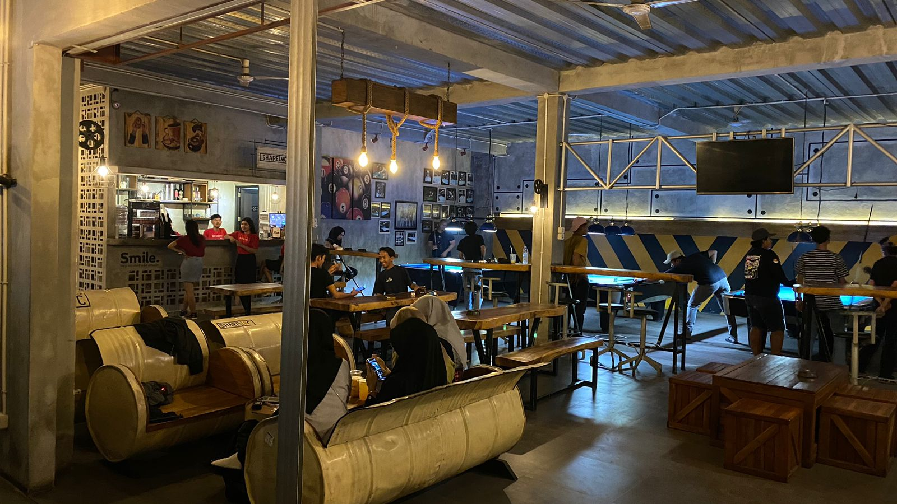
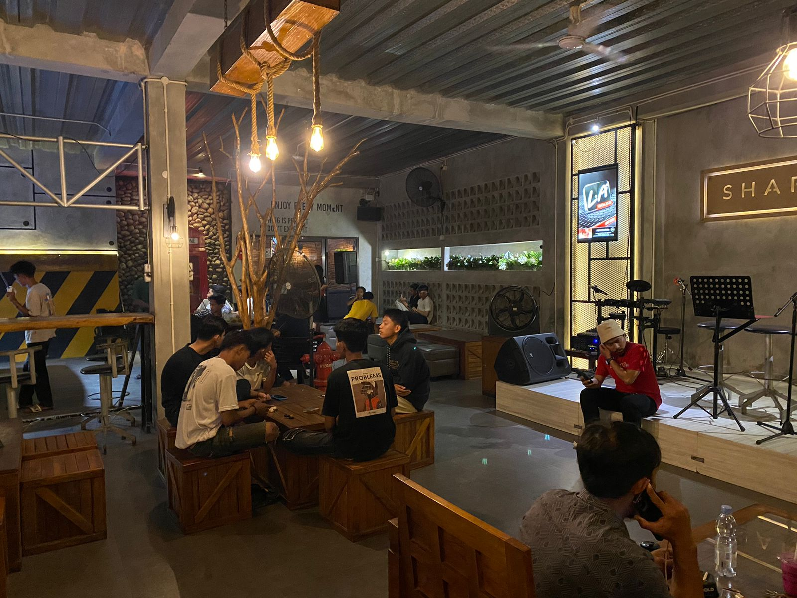
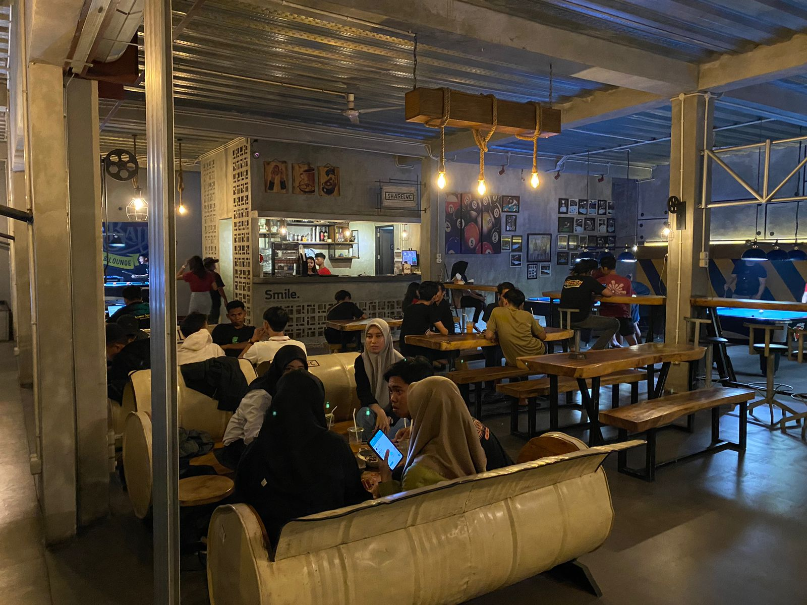
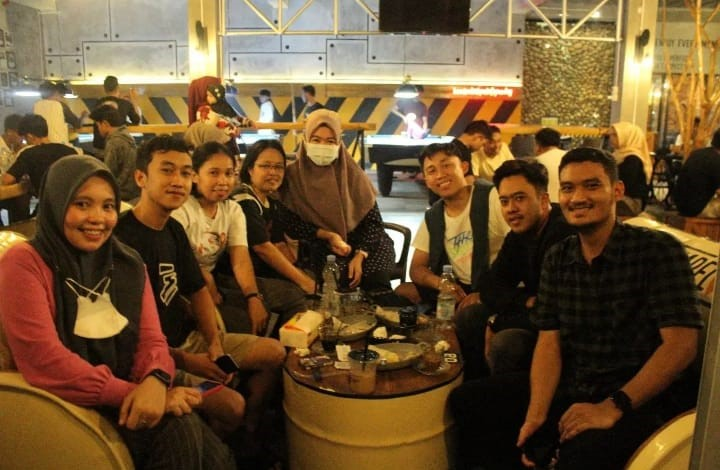
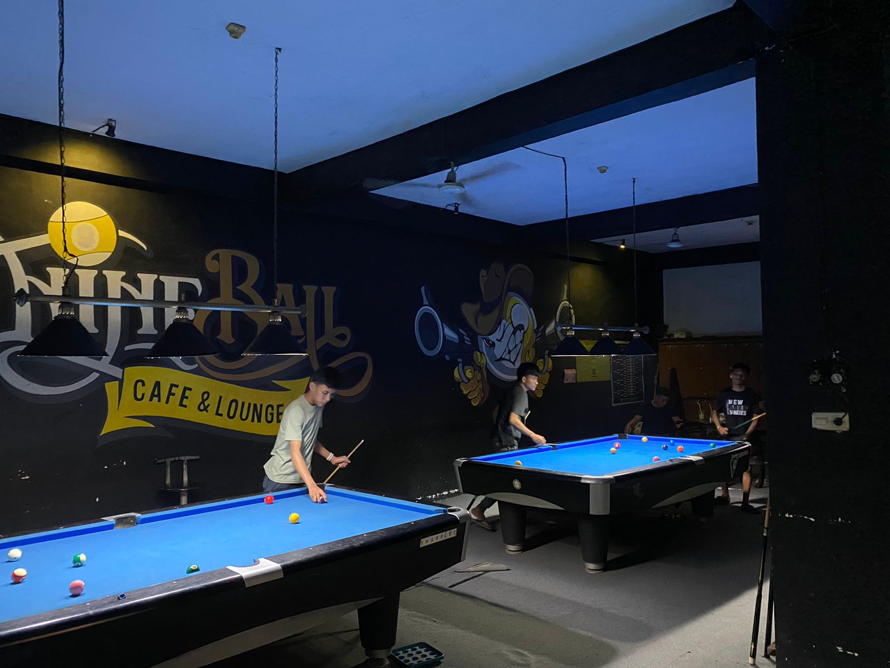
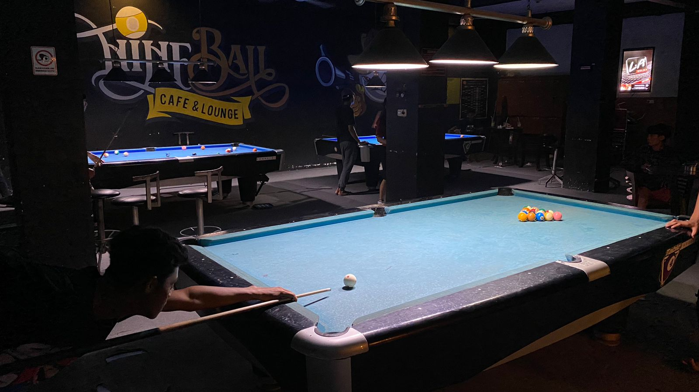
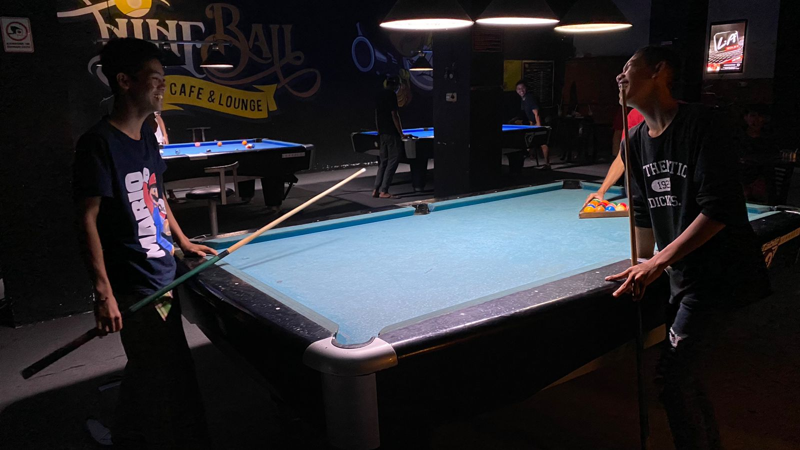
Bersantai dan bermain di Cafe Shareloc & Billiard adalah pilihan yang tepat untuk mengajak rekan dan teman-teman anda karena tempat yang disediakan cukup luas. Pada Cafe Shareloc & Billiard juga menyediakan permainan billiard yang dapat kita sewa untuk bermain
bersama teman-teman, kemudian untuk hanya bersantai dan nongkrong biasa juga masih sangat cocok di Cafe Shareloc & Billiard dimana pada menu yang disedikan terdapat beragam makanan dan minuman, mulai dari makanan ringan atau cemilan hingga makanan berat bagi
pelanggan yang ingin makan makanan berat.
Dokumentasi bersama pengelola Cafe Shareloc & Billiard
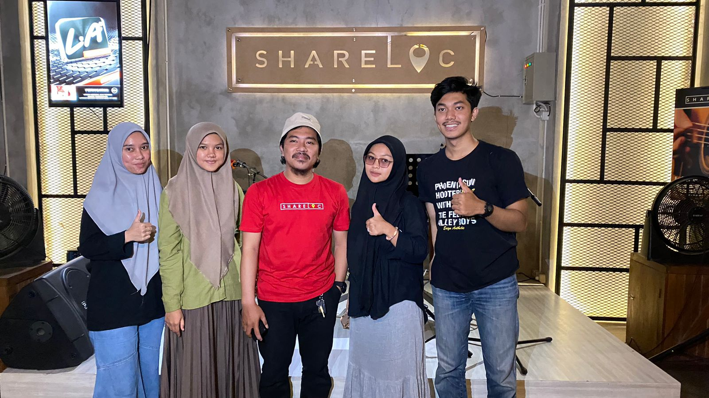
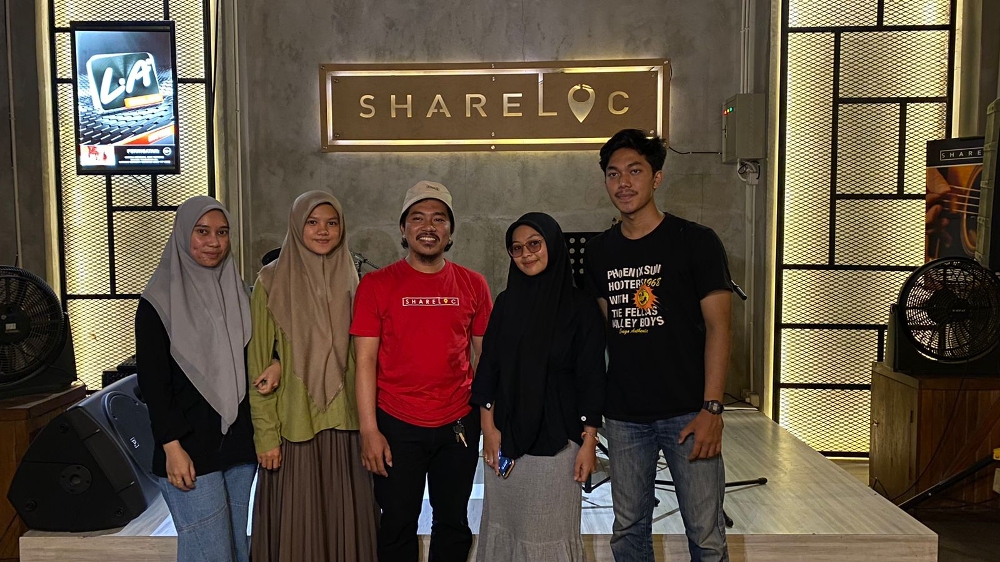
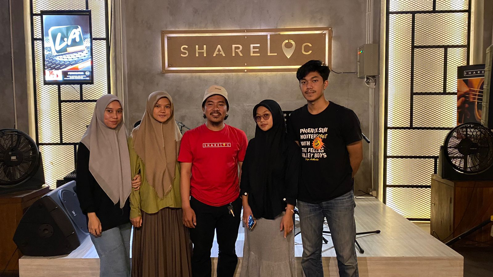
Dokumntasi yang diambil pada saat berkunjung di Cafe Shareloc & Billiard dan bertemu langsung dengan pengelola Cafe untuk meminta izin kepada pengelola Cafe Shareloc & Billiard agar kami bisa membicarakan mengenai pembuatan website tentang Cafe Shareloc & Billiard.